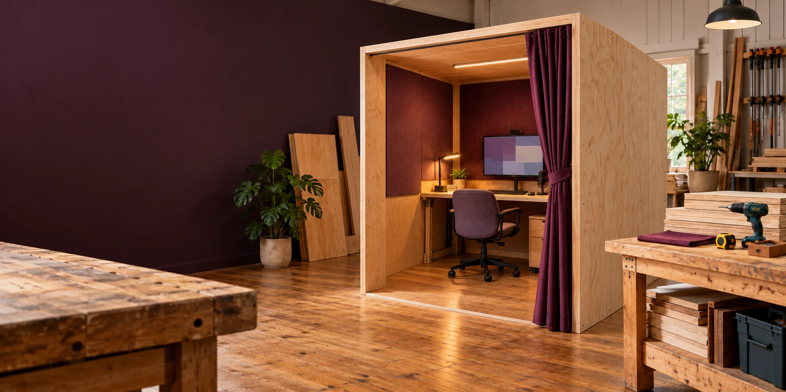

04 / MINJERRIBAH AND REDLANDS
Build a place
to begin.
A portable station. Suitable reused equipment. People who can help. A public trial shaped around the place it serves.
A proposal ready for practical questions.
The source proposal is Version 1, dated 19 October 2026. The public copy includes the author’s 20 October reference correction. It proposes a trial on Minjerribah and across Redlands. Venues, hosts, funding, dates, public contact arrangements and activity costs have yet to be agreed.
The lower-cost approach reuses suitable equipment and a portable flatpack structure. The proposal does not publish a dollar budget, session fee or quantified saving against Genesis.
Read the corrected trial proposal ↓Make the trial concrete.
Hosts and responsibilities
Agree venues, activities, staffing, contacts and relevant council or community processes. First Nations participation and cultural material require agreements with the appropriate people.
Equipment and budget
Inventory reusable equipment and price missing parts, transport, installation and support. Test computers with the actual sensors and applications running together.
Structure and access
Complete stability, secure mounts, assembly, physical access, suitable interfaces, language support and assisted participation arrangements.
Records and handover
Demonstrate permissions, calibration, correction, export, deletion, backup recovery and treatment of records left on public equipment.
Community connections
Test conversational contribution recognition and connect civic submissions to the responsible receiving channels.
Review
Examine completed tasks, measurement quality, reliability, privacy, access barriers, costs and support effort. Record what helped, what failed and what changed.
Aura can begin outside Genesis.
Genesis is a separate opt-in programme for developing an ultra-high-definition Aura twin and learning to work with it through twin socialising. The proposal describes sixty two-hour pressure sessions, totalling 120 hours, with its own equipment, clinical assessment and participation agreements.
Genesis is not required for Verse Box, an everyday Aura, C-Hours or civic participation. Verse Box’s public demonstration route gives people a way to begin with everyday projects and suitable equipment.
Explore Aura Genesis Protocol ↗